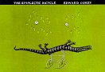

29 28 27 | 26 25 24 23 22
21 20 | 19 18 15 14 13 | 12 9 8 7 6 | 3 2 1
29-8 (woensdag)
-
[phys]ALF project
-
Stokesilet in a spherical vessel, その８
- Faxen's law の不備、修正 (ST Rev 1.1, 1,2,
STS Rev 1.8)
- alf-fvel (Rev 1.2), xy に加え yz
でも計算、 予想通り z
方向に逃げてた
- alf 改訂、Rev 3.6
- 2D, 3D の 200-130 再計算中
28-8 (dinsdag)
-
石川直樹インタヴュー(7大陸最高峰登頂)
- seminor
-
[phys]ALF project
-
Stokesilet in a spherical vessel, その７
-
alf-fvel (流体の速度場計算 code)、続き
- 芳しくない、 cartesian に加え
polar でも計算、怪しい…
- 非圧縮性の検証…
-
自宅にて
-
何が悪いのか…足場探し、良いはずであると信じる
- point 近似と boundaryが問題か…
ふと、Faxen's law
の(私の実装の)不備に気付く
- 明日、確かめて見よう
27-8 (maandag)
-
どうも新学期(新年度、か)がはじまったようで、
休憩時間(と思われる時間)に廊下が騒がしい
- andrea と議論
-
[phys]ALF project
-
Stokesilet in a spherical vessel, その６
-
解析
- vel-polar を res file 対応に。
Vr=0 の分布問題、解決
- alf
の出力速度(計算過程ではない)が
STS でなく ST だった、
修正
- 流体の速度場計算 code 書く、
どうもおかしい
26-8 (zondag)
- oldenzaal
方面へサイクリング
-
[phys]ALF project (自宅にて)
-
Stokesilet in a spherical vessel, その５
-
計算 for 200-130、その２
- transient である可能性を検証、
200-130-2 計算中
- もう一つの可能性、self
の寄与を小さくする、 200-130-2.test
計算中
25-8 (zaterdag)
- 自宅にて
-
[phys]ALF project
-
Stokesilet in a spherical vessel, その４
-
再定式化
- θを使わない ( jacalを補助に…、
Rev 1.4)
- 整理、Rev 1.5
- stokes に組込み
-
alf に組込み
- 同時に res file を統合、
変換 script 群を書く
- 出力のタイミング調整
- 計算 (200-130),
見ため、変わらず…
- 確認、速度場を計算 (gnuplot の data
style vector も実験)、
いいようだが…
24-8 (vrijdag)
-
[phys]ALF project
-
Stokesilet in a spherical vessel, その３
- programming、 仕上げる
-
テスト開始
- Ji 非対称だが、いいのか?
- 球面上で速度を計算、 zero
になってない、 parallel 部はok,
問題は perpendicular 部,
(お粗末な) bug 発見
- テスト終了 (Rev 1.3)
-
ついでに論文の typo を確認
- (5) 式の perpendicular
部(δkm-eke
m) 第一項の " s "
はいらない
- まぁ最初から typo だと思って
coding してたが
-
例外処理
- y = 0 の時、厳密を返す
- y // x の時、
漸近挙動…詰まった、 とりあえず TINY
を噛ます
- Rev 1.4
- テスト、 y = 0 の時は ok,
y // x の時、
ときどきおかしい…
-
＜育英会＞奨学金補助１割カット 無利子枠減らす 文科省（毎日新聞）
23-8 (donterdag)
-
[phys]ALF project
-
Stokesilet in a spherical vessel, その２
- 式の書出し、 自分流、 微分…
level 低い、 終了
- programming に戻る、
時間切れ、未完成、 Rev 1.2
22-8 (woensdag)
-
朝、風呂の天井からまた水洩れ、しかも今回は汚水だ…
-
どうも上の住人がパイプを詰まらせて、トイレの水が溢れて、
それが床のヒビか何かから洩れて来たらしい
-
衛生的に最悪なので早急に何とかして欲しいものだ
-
[phys]ALF project
-
analysis、その３
- detlef との議論のための作図 (200-130.2d+2
で)
-
detlef と議論
- 一昨日渡した結果が
昨日の考察によって
junk になった事を伝える
- また、発見した clue も議論する。
多分そっちが正しい方向だろう
- これから彼は、夏の学校の先生 ->
家族と休暇、ということで 帰って来るのは 9
月中旬(だったっけ?)
- 入れ替わりに andrea prosperetti が来る。
例の周期系の話をしてもいいぞ、と言われる
(当然、今の問題も進めておく事を前提に…)
- lubrication
もまとめるつもりだったが。忙しくなりそう
-
修論発表会
- 今日、グループの master students
の二人の修論の defense があった
-
オランダの(UTの?)特徴
- 聴衆として一族がやって来ている。
誰か後ろの方から質問したら、前に座っていたおばあちゃん(明らかに、
大学関係者ではない)が「ギロッ」と振り返り
2 秒静止し、
その後横のおばちゃんに「ボソボソ」と言っていた
(想像「うちの孫を困らせるような質問をするなんて、なんて意地悪な人…」)
- 一人一人の発表が終るたびに committie
が別室に下がり議論、
(その間聴衆は廊下に準備された coffee
などを飲みながら時間潰し、) 10
分後「おめでとう」となるが、その後、研究上の先輩(今回はそれぞれ
post-doc)
が彼らの研究振りを冗談をおりまぜながら(必須)スピーチした
- いずれにせよ、大変 at home
な雰囲気がただよっていた
- 但し、一族はそれぞれ総入れ換えしていた
(まあ、当然か)
21-8 (dinsdag)
-
[phys]ALF project
-
analysis、その２
-
新 plan d) 速度の (r,θ)
分離
- pos, vel -> vel-polar code 書く
- 分布計算 code 書く
(古いのもあったが、新たに)
-
200-130.2d を解析
- Vr(r)、なるほど
- rα(t)、なるほど
(しかしほとんどα依存ない…)
-
θα(t)、まずい
(ほとんどずれてない)
-
横ずれ(ない)問題
- うなる、ふと Batchelor
の繰込みに思い至る
-
さらにうなっていたら、Kim
の論文を思い出す
- coding 開始、まだまだ (Rev 1.1)
20-8 (maandag)
-
discussion on granular jets (cf. 26-6)
-
[phys]ALF project
-
analysis
-
snapshot 作図
- 3D->2D AWK script 書く
- pos -> PS snapshot の program
発掘、 p-a 対応にする、
- vel の 2D 化 AWK script
も書く
- 昨日の結果を絵にする、 ということで
19-8 の plan b)
終了
- detlef に copy を渡す (15-8 の「結果」には不十分…)
19-8 (zondag)
- lonneker
方面にサイクリングに行く
-
[phys]ALF project(自宅にて)
-
simulations
- 200-130.2d, 200-130.2d+2, 200-160.2d,
200-160.2d+2, 200-190.2d, 400-130.2d, 400
- とりあえずこんなところ
- analysis の plan を練る
18-8 (zaterdag)
- 自宅にて
-
[phys]ALF project
-
プログラムの手入れ、その４
- ALF-加速版 (va_ALF)
と非ALF-加速版 (va)
の比較、問題なし
- 新 package の組込み、
ついでにランダムの weight 修正、 debug
などなど
15-8 (woensdag)
- 友人より日本土産をいただく
-
[phys]ALF project
-
detlef と議論
-
ALF に関する要望
- 今週か来週のはやいうちに結果を出す
- secondary Bjerknes が効くか
-
プログラムの手入れ、その３
- 定数-加速版 (va)つづき、
coding, test 実施、問題なし
- ALF-加速版 (va_ALF)開始、
要素を追加、 ひたすら coding
- ALF-非加速版 (vel_ALF)追加、 based on
非加速版 (vel)
- ALF-非加速版 (vel_ALF)
と非ALF-非加速版の比較、問題なし
14-8 (dinsdag)
- 出勤、久しぶりに天気がよい
-
[phys]ALF project
-
プログラムの手入れ、その２
-
加速時 routine
- ODE integrator に与える routine、
問題は interface, global
を一つに、一つ定義外使用、
一つの大きな制限、 mass
要素を追加
- Rev 1.2, 未 test
-
しかし、これは今の用途にはすぐには使えない
(「一つの制限」のため)
13-8 (maandag)
- 在宅勤務、雨
-
[phys]ALF project
-
プログラム手入れ
- これまでの泥縄式を脱皮するため
(特に加速度 = res)
-
stokes.c 開始
- 粒子群構造体、 基本ルーチン
- test-stokes.c 開始、 3
粒子落下(mob)までよし
- 現状で登録 (Rev 1.1)
12-8 (zondag)
-
[phys]ALF project
-
TOY 改訂 (TOY とは粒子系 simulation
結果の表示用の Xlib program)
- p-a 対応の泥縄を元の code で option
で対応し統一、 style を今風に、
名前変更(toy-3d)
9-8 (donterdag)
-
ここ数日「ウソ」ってものにひっかかってる
-
「
出発点」 (ISBN 4-19-860541-6) (7-8に届いたうちの一冊)を読んでいるのだが、
その一節が残っている

- p.77,
「マンガ映画の本当の面白さは、自転車が、スーパーカーと競走して、
正々堂々と勝利を収めるところにあるような気がする。
それがゴロ合わせのパロディではなく、
上手なウソのつみかさねで、
説得力のある勝利になったとき、
もっとも愉快になれるのではないだろうか」
-
←
5/3/2004,
6/20/2002,
3/4/2002
-
「ウソ」のひっかかった発端は「村上、河合」の中のやりとりだったな
-
「嘘はダメ」という公式で、
嘘の向こうにある世界をこれまで切捨てて来た気がする
-
まあこの視点も「常識は疑え」という公式のひとつの適用に過ぎないが
-
「嘘のない世界」だけで充足しているのなら(必要ないのなら)、
そっちに首を突っ込む必要はない、のか
-
今日もふと
amazon.co.jpトップ100
見てて、面白そうな本(「
優雅に叱責する自転車」 ISBN 4309264352)
に目がとまる 
- トップ100なんて
大体決まった傾向の本ばっかりで特に上位はどうでもいいが、
「もしかして」という気持ちから全部見てしまう
- うまく diff
とかとれればいいのだが…
- amazon の
「この本を買った人はこんな本も買っています」は、
ちょっと恐い気もするが、時々思わぬ発見があって有用
(まぁほとんどは予想通りだが…)
- 追記:Edward Gorey の本は 2-2002
に入手した
-
[phys]ALF project
-
TODO 3) lubrication 導入
- いろいろ code 書く、
計算、変化なし
- 考える、trivial ⇒ TODO 3
終結
- では何だ? 3D
、粒子数増、いずれもぱっとせず
8-8 (woensdag)
-
研究室の人と enschede にある Grolsch の工場を見学(for
fun)
-
[phys]ALF project
-
TODO 2) 統計平均
- tool 改良、当たりをつけるため累積表示用
script を書く
-
結果
- 球形でも構造は見えるが、
軌跡は直線(期待する挙動は見えない…)
- 近似 secondary でもダメ、
Pa 小でもほとんど同じ
7-8 (dinsdag)
- 今日は雨のち晴れ
-
2-8 発送されたと言う商品 (29-7注文)、
何と今日届いた
-
キッズ goo
なるもの発見
-
文体が何で「小学生、中学生のためのホームページだよ」となるのか?
「ホームページです」でダメな理由は思い当たらない
-
もしかして、小学校、中学校の教科書って「〜だよ」とか書いてあったっけ?
(もう忘れたなぁ…)
-
フィルタリングしてて、はじかれたリンクは以下のような感じになる
 (このページはキッズgooのルールいはんが
見（み）つかったためひょうじしないよ)
(このページはキッズgooのルールいはんが
見（み）つかったためひょうじしないよ)
-
当然、子どもたちは自然に「これでは分からない」と思って、
次に「おとなの」goo
に行って調べるだろうな
- まちがって www.goo.co.jp
なんかに行ったりしたら、そりゃ大変 :-)
- 八当たり、だな。
-
[phys]ALF project
-
TODO 1) 球形化、その２
- cubic 係に対し spherical 系 routines
追加、 試運転、 いい感じかも
- TODO 2) 統計処理の方策を考える
6-8 (maandag)
- 原爆の日、
そろそろ甲子園(もうはじまってる?)、
夏だな、 何か思い出すな
- APS-DFD01の 概要を見える所に置く
-
何か最近 web server に長い argument
付けて defalut.ida
にアクセスする奴が沢山いるので
検索してみる
-
やっぱりクラックを試みているらしい…
-
いや、これが今流行りの " Code Red "
らしい。 JPCERT/CCより
- MS の IIS が問題なので、apache
は関係ない
-
追記(7-8-2001): その他の情報
-
引越したオフィスの写真
-
[phys]ALF project
- 27-6から復活
- 今後の TODO をまとめる (とりあえず
1 ~ 5 まで)
- TODO 1) 球形化、
定式化(と言う名の復習)、 後は
program を直すだけ
3-8 (vrijdag)
-
detlef, chicago から帰還。 議論する
-
APS-DFD01
は、(特例として) 自分のネタ
(lubrication)
をもって発表していい、ということになった
- 何しろ西海岸までの旅行は expensive
だからなぁ
- lubrication 論文を仕上げねば。 27-6以来の ALF
も今月中にメド、との schedule.
2-8 (dinsdag)
-
29-7の買物、
今日発送されたらしい
- 実はその後着実に item を増やして、結局本
5 冊追加。 その結果合計 28,319円
(送料 5,050円) なり
- 予定では 31-8 ~ 11-9 到着、とのこと
1-8 (woensdag)
29 28 27 |
26 25 24 23 22
21 20 |
19 18 15 14 13 |
12 9 8 7 6 |
3 2 1

 2001年8月
2001年8月{kind=link}